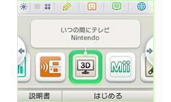
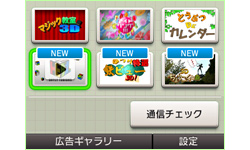
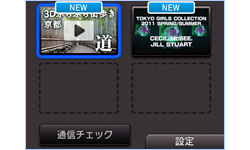
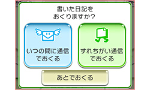
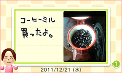
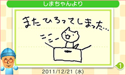

N.O.M2月号 『いつの間にテレビ』で多彩な3Dコンテンツを楽しもう
1. 「いつの間に通信」で楽しめる ニンテンドー3DSダウンロードソフト
『いつの間にテレビ』と『ニンテンドービデオ』は、ニンテンドー3DSの『ニンテンドーeショップ』から無料でダウンロードできる映像再生ソフトです。また、2011年12月に配信が開始されたコミュニケーションソフト『いつの間に交換日記』も、無料でダウンロードすることができます。
まずは、こちらのページを参考に、ソフトをダウンロードしましょう。
なお、ニンテンドー3DSで、このページにあるQRコードを読み取れば、『ニンテンドーeショップ』の各ソフト情報のページにすぐアクセスできます。
『いつの間にテレビ』


『いつの間にテレビ』のアイコンをタッチして起動すると、最新の3D映像が再生されます。また、映像再生中、下画面の左下にある「メニュー」をタッチすると、保存されている3D映像が一覧表示されるので、好きなコンテンツを選んで再生することも可能です。

新しい3D映像が配信されると、『いつの間にテレビ』のアイコンに青いマークが表示されます。その日の3D映像のダウンロードがすべて完了していれば、インターネット接続できない場所でも3D映像を再生できます。ダウンロードした映像は新しい映像を受信すると上書きされますので、好きなコンテンツは毎日チェックをおすすめします。
『ニンテンドービデオ』


『ニンテンドービデオ』は、『いつの間にテレビ』と同様に、「いつの間に通信」を使って映像を自動ダウンロードして楽しめるソフトです。使い方も『いつの間にテレビ』とほぼ同じです。
毎日きまった内容のコンテンツが配信される『いつの間にテレビ』とは異なり、『ニンテンドービデオ』の映像は不定期で配信され、コンテンツの内容もそのときによって変わります。
「ショートショート フィルム フェスティバル＆ アジア」
冬の厳しい寒さの中、風に揺られて電柱から落ちようとしている電灯と、降り積もった雪の間から顔を出した芽が織り成す、心温まるストーリーを描いたアニメーション作品です。
「前半」は2月10日まで、「後半」は2月12日まで配信されています。
『いつの間に交換日記』

『いつの間に交換日記』は、『ニンテンドーeショップ』から無料でダウンロードできる、手書きの日記作成・閲覧ソフトです。作成した日記は、「フレンドリスト」に登録している家族や友だちに「いつの間に通信」や「すれちがい通信」を使って送ることができます。
日記には、普通のペンと3Dで飛び出して見えるペンを選べます。

また、「ニンテンドー3DSカメラ」で撮影した3D写真を貼りつけたり、「ニンテンドー3DSサウンド」で録音した音声（最長で5秒間）をつけることも可能です。ひとつの日記は最大4ページ書けるので、4コマ漫画のようなストーリー仕立てにすることもできます。日記に使う「びんせん」も、「ゲームコイン」を使って種類を増やすことができます。

『いつの間に交換日記』では、自動的にフレンドの誰かが書いた日記が送られてきて、その人の書いた書き順のとおりに再生されるので、日記を書く時間があまりない人でも、送られてきた日記をひとつの映像作品のように楽しめます。その日に見た『いつの間にテレビ』や『ニンテンドービデオ』の感想や、自分がプレイしているゲームでうっかりやりがちなネタなどを、みんなで気軽に交換してみても面白いでしょう。